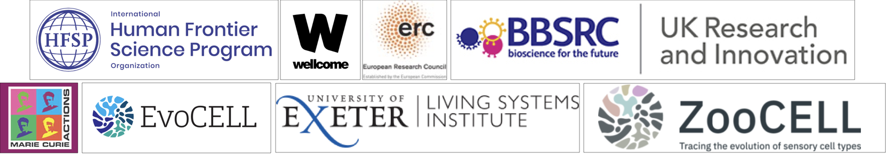
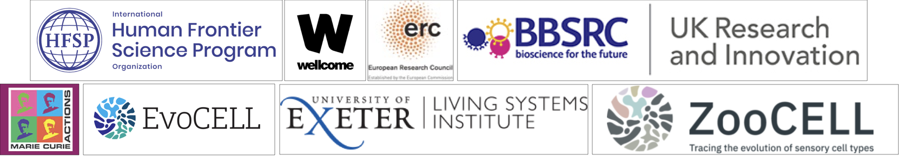

Neuronal Control of Motile Cilia
UNICIL Launch Symposium | 24 February 2026, LSI - Exeter
Motile cilia in animal tissue

Ctenophore aboral organ – gravisensing (balancer)
Ctenophore aboral organ – gravisensing (balancer)


Volume EM reconstruction – array tomography workflow


Array tomography workflow

- Zeiss Gemini SEM

- Large stage

- Atlas AT software
Four quadrants


- S – sagittal plane
- T – tentacular plane
- same cell types in each quadrant

Ctenophore balancer organ
- 4 clusters of ciliated balancer cells
- statocyst: grey spheres
- basal bodies: red dots
Connectome of the ctenophore apical organ

Connectome of the ctenophore apical organ

Differential control of ciliary arrests vs. re-beat


Synchronisation of beat frequencies


The bridge may mediate synchronisation of CBF


Platynereis dumerilii

- breeding culture
- genome sequence
- microinjection, transgenesis
- neuron-specific promoters
- knock-out lines
- neuronal connectome
- neuronal activity imaging
Exquisite ciliary bands


- Platynereis dumerilii larvae – 10,000 cilia
Whole-body volume EM of an entire three-day-old larva

Increase in calcium induces ciliary closures

Rich neuromodulation of ciliary closures

Acknowledgements
Lab members
- Alexandra Kerbl
- Sanja Jasek
- Emily Savage
- Simone Wolters
- Anja Ciprianidis
- Kevin Urbansky
- Karel Mocaer
- David Hug
- Jules Duruz
- Mateusz Kostencki
- Benedikt Dürr
- Kata Szabó
- Marzia Matejzek
 

Facilities
- EM Core Facility
- Réza Shahidi
- Charlotta Funaya
- Nikon Imaging Centre
- Ulrike Engel